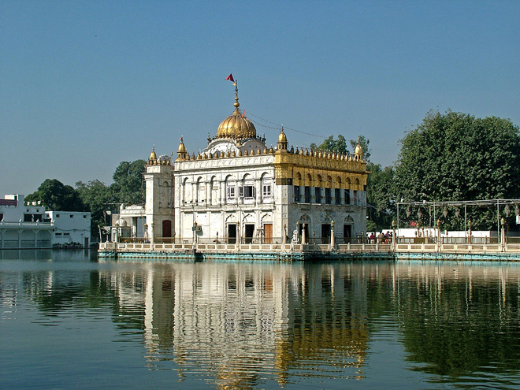
.
The Durgiana Mandir, though a Hindu temple, has architecture very similar to the Golden Temple. This temple derives its name from the Goddess Durga. Idols of Goddess Lakshmi (Goddess of Wealth) and Vishnu (Protector of the World) are also deified and worshipped.
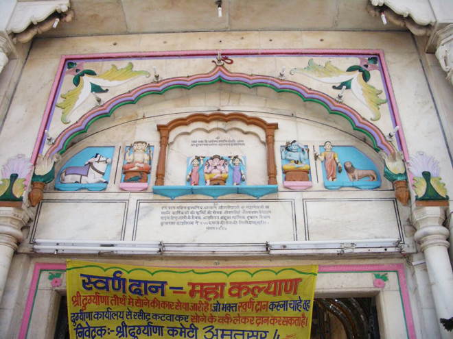
It was built in 1921 by Guru Harsai Mal Kapoor, in the middle of a sacred lake. Its dome and canopies are similar to that of the Golden Temple and also has a bridge to provide the approach to the main building. The dome is illuminated with colourful lights.
It is sometimes called the Silver Temple because of its large exquisitely designed silver doors. It has a rich collection of Hindu scriptures.
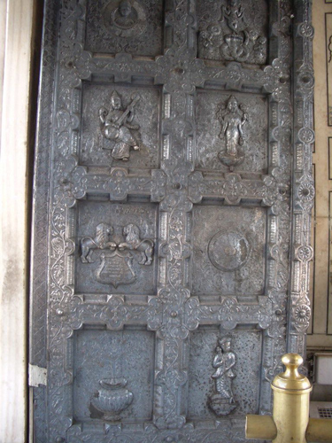
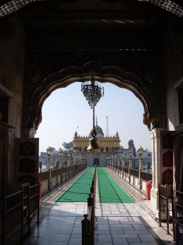
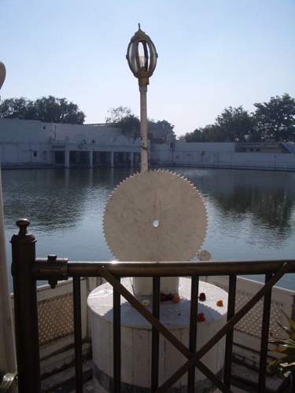
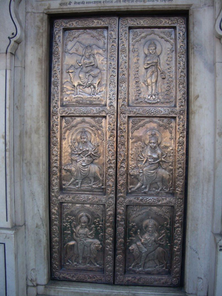
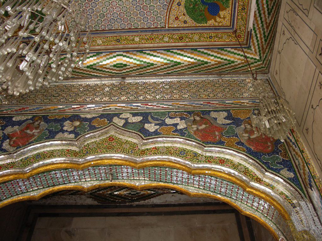
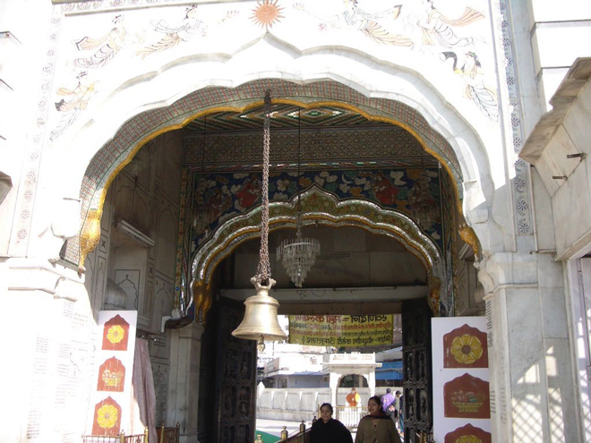
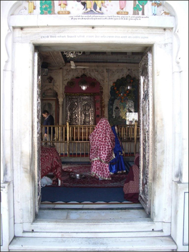
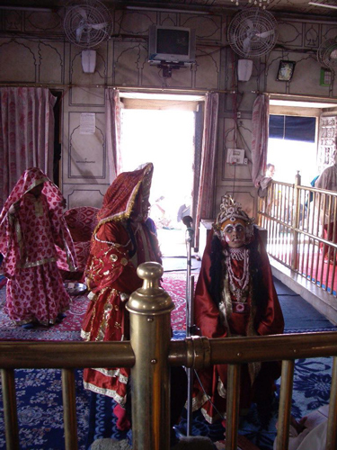
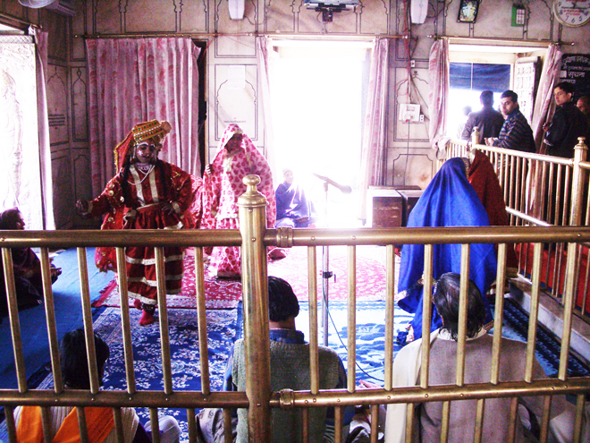
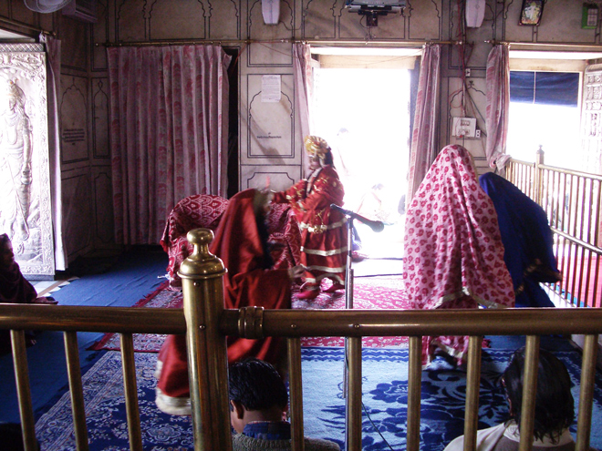
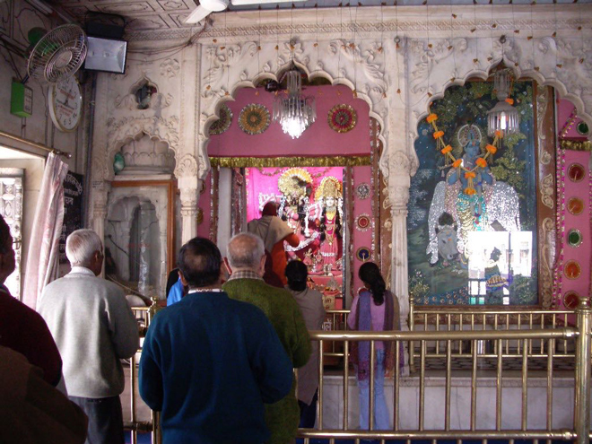
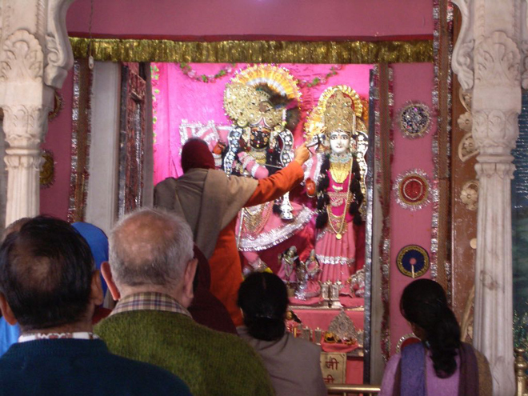
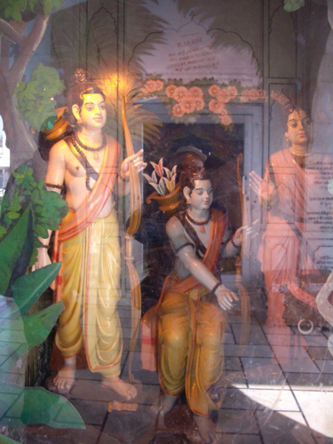
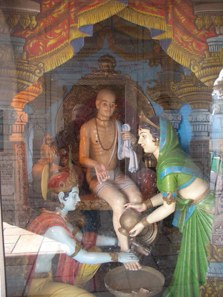
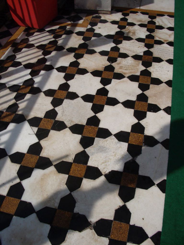
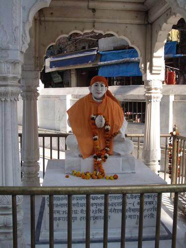